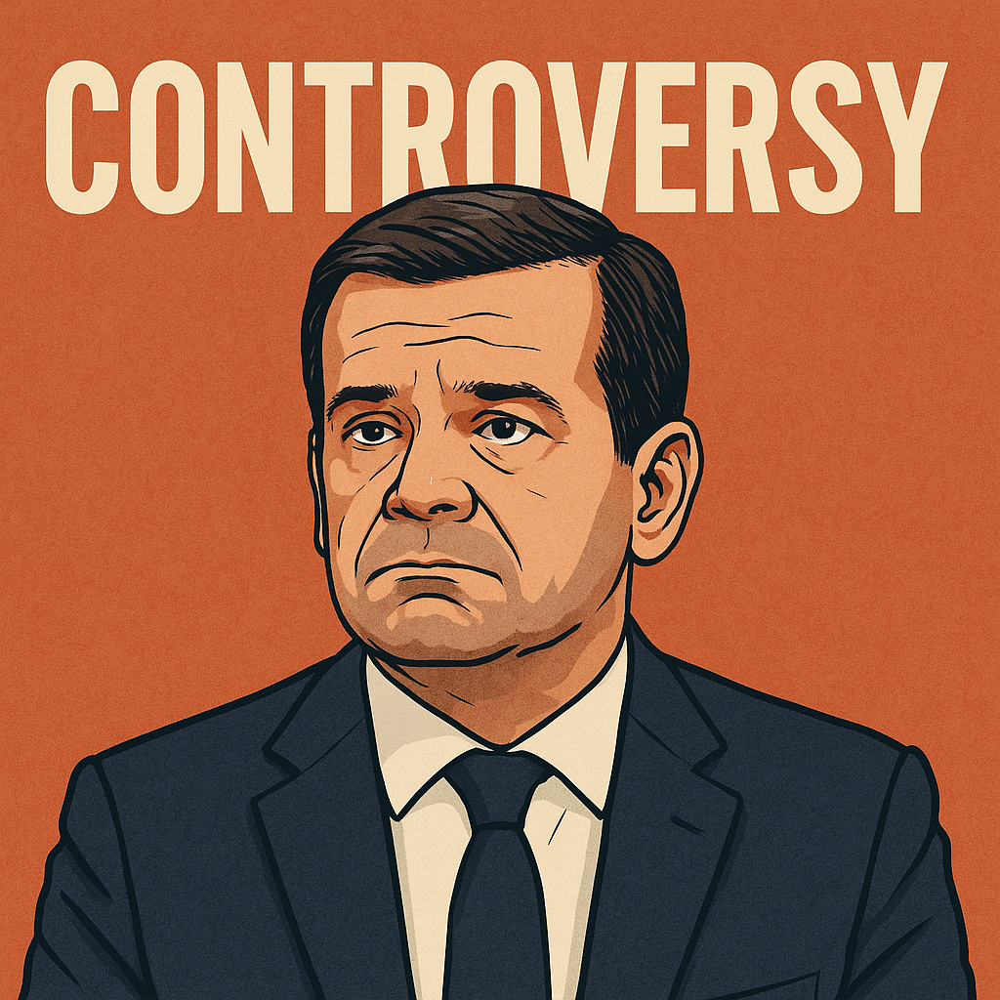

Por Augustus
Portugal assiste, uma vez mais, à transição de uma polémica política para um caso de potencial gravidade judicial. Luís Montenegro, líder do PSD e ainda aspirante ao cargo de primeiro-ministro, vê agora o seu nome e círculo próximo diretamente envolvidos numa investigação formal que ultrapassa o plano da ética e entra na esfera da justiça criminal. O escritório de advogados com ligações familiares diretas está sob o escrutínio das autoridades, com buscas e apreensões já confirmadas.
Até agora, Montenegro escudava-se na legalidade formal dos seus atos e na separação entre a sua função política e os negócios da sua família. No entanto, a entrada do Ministério Público e da Polícia Judiciária neste enredo marca uma mudança profunda. Já não se trata de um debate sobre transparência ou conveniência política — trata-se de apurar responsabilidades legais.
Num Estado de Direito, ninguém está acima da lei. E a recorrência com que figuras públicas parecem acreditar que o cargo as imuniza da justiça ou do escrutínio, apenas agrava o divórcio entre cidadãos e instituições.
A manutenção da candidatura de Luís Montenegro a primeiro-ministro nas eleições de maio torna-se cada vez mais incompreensível, à luz dos factos. Um candidato sob suspeita judicial direta não pode apresentar-se como credível para liderar um governo que precisa urgentemente de resgatar a confiança dos cidadãos.
Pior ainda, o PSD arrisca um haraquiri político ao insistir em manter um líder fragilizado à frente da corrida, hipotecando o capital político de uma alternativa viável à atual degradação do sistema.
A morosidade da justiça portuguesa já nos habituou a ver casos arrastarem-se durante anos, como noutros escândalos de corrupção de alto perfil. No entanto, cada novo caso que surge reforça a percepção de que há dois sistemas em Portugal: um implacável para os comuns cidadãos, e outro brando, evasivo e cúmplice para os poderosos.
É tempo de romper com este padrão. A justiça tem de ser célere, rigorosa e independente. Caso contrário, continuaremos a alimentar uma democracia simulada, onde os rituais se mantêm, mas a substância se esvazia.
Este novo capítulo não é apenas mais um episódio na biografia política de Montenegro. É um símbolo de um regime exaurido, onde ética, responsabilidade e verdade deixaram de ser critérios mínimos para o exercício do poder.
Se a justiça cumprir o seu papel, poderá ainda haver espaço para regenerar a democracia. Se não o fizer, continuaremos a viver num país onde a impunidade é regra, e a esperança, uma ilusão cada vez mais frágil.
Créditos para OpenAI e chatGPT (c)